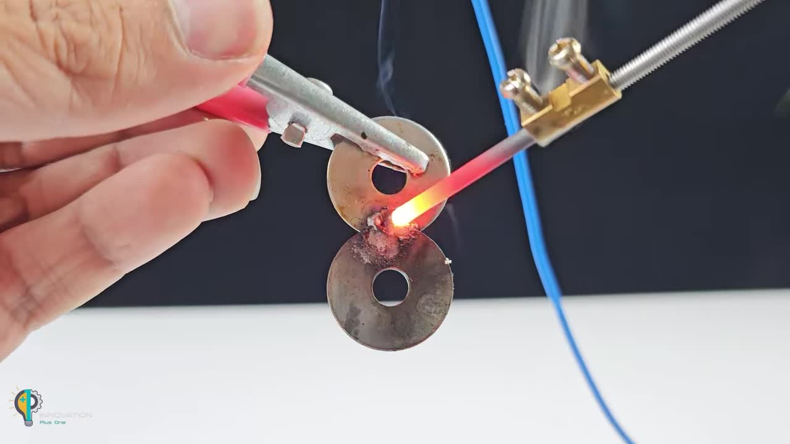
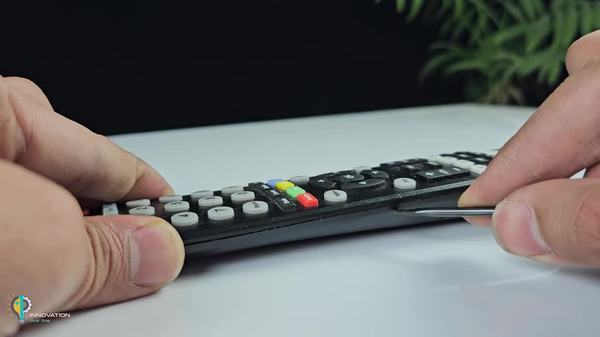

妙用无穷：揭秘日常生活中的极客巧思
Unleash your inner innovator with these clever hacks using common items.
核心特点
这些创意项目展示了如何利用身边简单、易得的物品，解决实际问题，或者进行有趣的科学探索。它们融合了低成本、高效率和意想不到的功能。
These creative projects demonstrate how to use simple, readily available items to solve practical problems or conduct fun scientific explorations. They combine low cost, high efficiency, and unexpected functionality.
-
创意无限
Unlock surprising new uses for everyday objects. -
实用技能
Learn practical tricks for quick fixes and experiments. -
低成本
Achieve impressive results with minimal expense.
安全警告：请注意，部分项目涉及电池、加热、尖锐物品或化学反应，操作时务必小心谨慎，建议在成人监督下进行。对操作结果及可能造成的损失，作者不承担任何责任。
Safety Warning: Please note that some projects involve batteries, heating, sharp objects, or chemical reactions. Exercise caution during operation and it is recommended to be under adult supervision. The author is not responsible for the results or any potential damages.
简易热切割/封口工具
DIY Hot Cutter/Sealer
利用安全别针和接线端子，快速制作一个可以切割或封口塑料袋的工具。
Use safety pins and a terminal block to quickly create a tool for cutting or sealing plastic bags.
所需材料 (Materials):
- 安全别针 (Safety pins)
- 接线端子 (Terminal block)
- 小型螺丝刀 (Small screwdriver)
- 刀具/美工刀 (Cutter/Utility knife)
- 打火机中的加热丝/弹簧 (Heating element/spring from a lighter)
- 电源 (如 12V 7Ah 电池) (Power source, e.g., 12V 7Ah battery)
- 鳄鱼夹连接线 (Alligator clip wires)
制作步骤 (Steps):
- 用刀具将接线端子按需切割成小段（例如，4个接线位）。 Cut the terminal block into smaller sections as needed (e.g., 4 terminals) using a cutter.
- 拧松接线端子上的螺丝。 Loosen the screws on the terminal block.
- 从打火机中取出用于点火的加热丝（通常是微小的波浪形金属丝和弹簧）。小心操作，注意不要损坏。 Extract the heating filament (usually a tiny wavy wire and spring) from a lighter. Handle with care to avoid damage.
- 展开或调整加热丝的形状，使其可以连接到两个安全别针之间。 Straighten or adjust the shape of the heating filament so it can be connected between two safety pins.
- 将两个安全别针的圆环端分别插入接线端子的两侧，并将加热丝的一端连接到每个安全别针的圆环上。 Insert the loop ends of two safety pins into the sides of the terminal block, and connect one end of the heating filament to the loop of each safety pin.
- 将连接好加热丝的安全别针固定在接线端子中，拧紧螺丝。 Secure the safety pins with the heating filament in the terminal block by tightening the screws.
- 将连接线的裸线端插入接线端子的另一侧，并拧紧螺丝固定。 Insert the stripped ends of the connecting wires into the other side of the terminal block and tighten the screws.
-
将连接线的另一端连接到电源（如 12V 电池）上。加热丝会迅速升温变红。
Connect the other end of the wires to the power source (e.g., 12V battery). The heating filament will heat up quickly and glow red.
警告：请勿长时间通电，以免过热或损坏。仅接触需要切割或封口的塑料表面。
Warning: Do not keep it powered on for too long to avoid overheating or damage. Only touch the plastic surface that needs to be cut or sealed. - 使用加热的金属丝接触塑料袋，即可进行切割或封口。 Touch the heated filament to the plastic bag to cut or seal it.
多功能简易加热工具
Multi-functional Simple Heating Tool
利用电池、安全别针和指甲刀的金属锉，制作一个可以产生高温用于点焊或加热的工具。
Use batteries, a safety pin, and a nail clippers' file to create a tool that generates high heat for spot welding or heating.
所需材料 (Materials):
- 安全别针 (Safety pin)
- AA 电池 (或类似圆柱形电池) (AA battery or similar cylindrical battery)
- 连接线 (Connecting wire)
- 螺丝刀 (Screwdriver)
- 指甲刀 (Nail clippers)
- 钳子 (Pliers)
- 棉花 (Cotton)
- 胶水 (Glue)
- 小螺丝和螺母 (Small screw and nut)
- 石墨棒 (从废旧电池中提取) (Graphite rod (extracted from used batteries))
- 金属垫片 (Metal washer)
- 电钻 (可选, 用于打磨石墨棒) (Drill (optional, for shaping the graphite rod))
- 外部电源 (如 12V 7Ah 电池) (External power source, e.g., 12V 7Ah battery)
制作步骤 (Steps):
-
将安全别针的针尖部分弯曲成一个U形。
Bend the pointed end of a safety pin into a U-shape.

-
从废旧的AA电池中小心地取出石墨棒。使用工具（如指甲刀附带的锉刀或美工刀）剥开电池外部，取出中间的碳棒。
Carefully extract the graphite rod from a used AA battery. Use a tool (like the file on nail clippers or a utility knife) to open the battery casing and remove the central carbon rod.
注意：电池内部含有化学物质，操作时请佩戴手套，避免接触皮肤和眼睛。在通风良好的地方进行。
Caution: Battery insides contain chemicals. Wear gloves and avoid contact with skin and eyes. Work in a well-ventilated area. - 可以利用电钻和砂纸打磨石墨棒的一端，使其变尖，作为加热点。 Optionally, use a drill and sandpaper to sharpen one end of the graphite rod to create a heating point.
- 在石墨棒另一端缠绕一些棉花，并用胶水浸湿固定。 Wrap some cotton around the other end of the graphite rod and soak it with glue to fix it.
- 将安全别针的U形弯曲端固定到电池（或其他圆柱形物体）的一端，使用连接线（例如红色线）连接到安全别针的圆环。 Attach the U-shaped bend of the safety pin to one end of the battery (or other cylindrical object) and connect the connecting wire (e.g., red wire) to the safety pin's loop.
- 用螺丝和螺母将石墨棒固定在安全别针的弯曲端上。可以根据需要调整螺丝的位置来改变加热点。 Secure the graphite rod to the bent end of the safety pin using a screw and nut. You can adjust the screw position to change the heating point as needed.
- 使用另一根连接线（例如蓝色线）连接到电池的另一端。 Connect another connecting wire (e.g., blue wire) to the other end of the battery.
-
将连接线的鳄鱼夹端连接到外部电源（如 12V 7Ah 电池）。当石墨棒尖端接触金属或导电材料时，会产生高温和火花。
Connect the alligator clip ends of the wires to an external power source (e.g., 12V 7Ah battery). When the graphite rod tip touches metal or conductive material, it will generate high heat and sparks.

危险：请勿直接接触加热点或产生的火花。避免在易燃物品附近使用。此工具会产生高温，仅限有经验者使用。
Danger: Do not directly touch the heating point or the sparks generated. Avoid use near flammable materials. This tool generates high heat and should only be used by experienced individuals. - 可以尝试使用这个工具进行点焊小型金属部件，如螺丝和垫片。 You can try using this tool to spot weld small metal parts, such as a screw and a washer.
妙手回春：修复失灵的遥控器按键
Remote Control Button Repair
当遥控器上的某个按键不灵时，可能是导电层磨损。利用安全别针的金属圈可以进行修复。
When a button on your remote control is not working, it might be due to worn conductive layer. The metal loop from a safety pin can be used for repair.
所需材料 (Materials):
- 失灵的遥控器 (Malfunctioning remote control)
- 安全别针 (Safety pin)
- 平头工具（如小螺丝刀或刀具）(Flat tool (e.g., small screwdriver or cutter))
- 导电胶或导电油墨 (未在视频中明确，但通常需要) (Conductive glue or ink (not explicitly shown in the video, but usually needed))
- 清洁用品（如酒精和棉签）(Cleaning supplies (e.g., alcohol and cotton swabs))
制作步骤 (Steps):
- 用平头工具小心地撬开遥控器的外壳。 Carefully pry open the remote control casing using a flat tool. 
- 取出电路板和按键橡胶垫。找到失灵按键对应的电路板触点区域。 Remove the circuit board and button rubber pad. Locate the contact area on the circuit board corresponding to the non-working button.
- 清洁电路板上的触点区域和按键橡胶垫背面的导电层（通常是黑色圆点）。 Clean the contact area on the circuit board and the conductive layer (usually black dots) on the back of the button rubber pad.
- 取一个安全别针，使用钳子剪下其圆环部分。 Take a safety pin and cut off its loop part using pliers.
- 将剪下的金属圆环粘贴到失灵按键橡胶垫背面原有的导电点位置上（如果原点磨损严重，可能需要使用导电胶固定）。确保金属圆环可以良好地接触到电路板上的触点。 Glue the cut metal loop onto the original conductive dot location on the back of the non-working button rubber pad (if the original dot is severely worn, conductive glue might be needed to fix it). Ensure the metal loop can make good contact with the contacts on the circuit board.
- 将遥控器重新组装好。按键应该可以正常工作了。 Reassemble the remote control. The button should now work properly.
微型水解氢气发生器
Miniature Hydrogen Generator from Electrolysis
通过电解盐水，产生少量氢气，并演示其燃烧效果。这是一个有趣的化学小实验。
By electrolyzing salt water, generate a small amount of hydrogen gas and demonstrate its combustion. This is an interesting small chemistry experiment.
所需材料 (Materials):
- 废旧打火机 (Used lighter)
- AA 电池 (Used AA batteries)
- 连接线 (Connecting wires)
- 小玻璃瓶或药瓶 (Small glass bottle or vial)
- 注射器 (Syringe)
- 针头 (Needle)
- 细软管 (Thin flexible tube)
- 食盐 (Salt)
- 水 (Water)
- USB充电头或电源 (USB charger or power supply)
- 焊锡丝和烙铁 (可选) (Solder and soldering iron (optional))
制作步骤 (Steps):
- 从打火机和废旧AA电池中提取两个短小的石墨棒。石墨棒通常是电池内部的中心碳棒。 Extract two short graphite rods from a used lighter and used AA batteries. Graphite rods are typically the central carbon rod inside batteries.
-
取两根电线，剥掉一端的绝缘层。将电线缠绕或焊接到石墨棒的一端，作为电极。
Take two electrical wires and strip the insulation from one end. Wrap or solder the wires to one end of the graphite rods to form electrodes.
（焊接是更牢固的连接方式）(Soldering is a more secure connection method)
- 在一个小玻璃瓶的盖子上钻两个孔，使其刚好能穿过电线。再钻一个小孔用于插入针头或软管。 Drill two holes in the cap of a small glass bottle so that the wires can pass through snugly. Also, drill a small hole for inserting the needle or tube.
- 将连接好电线的石墨棒穿过瓶盖的两个大孔，使其浸入瓶中。用胶水或其他密封材料固定电线并密封孔洞，防止漏气。 Pass the graphite rods with connected wires through the two larger holes in the cap so they are submerged in the bottle. Seal the holes with glue or other sealant to prevent gas leakage.
- 在一个烧杯中倒入适量水，加入一些食盐并搅拌溶解，制成盐水。 Pour some water into a beaker, add some salt, and stir to dissolve, making salt water.
- 将盐水倒入安装好电极的玻璃瓶中，盖紧瓶盖。 Pour the salt water into the glass bottle with the electrodes installed, and close the cap tightly.
- 将注射器的针头部分固定在瓶盖的小孔上，或连接一段细软管并将软管另一端放入水中。 Fix the needle of the syringe onto the small hole in the cap, or connect a thin tube and place the other end of the tube in water.
-
将电线的另一端连接到USB充电头或其他低压直流电源。水中会开始产生气泡（氢气和氧气）。
Connect the other ends of the wires to a USB charger or other low-voltage DC power source. Bubbles (hydrogen and oxygen) will start to form in the water.
（连接电源时请注意区分正负极，尽管电解盐水都可以产生气体，但气体的产生速度可能不同。）(When connecting the power, pay attention to distinguishing positive and negative terminals, although both poles will produce gas when electrolyzing salt water, the rate of gas production may differ.)
-
待瓶中收集到一定量的气体后，取下针头或软管，用打火机或火源靠近瓶口，气体会被点燃。或者将软管末端收集到的气体（如果连接了软管）点燃。
After a certain amount of gas is collected in the bottle, remove the needle or tube and bring a lighter or flame near the bottle opening, the gas will ignite. Alternatively, ignite the gas collected at the end of the tube (if a tube is connected).
危险：产生的气体是易燃易爆的氢气。点燃时可能发出爆鸣声。请务必在通风宽敞的环境中进行，并远离脸部和易燃物。
Danger: The generated gas is flammable and explosive hydrogen. It may produce a popping sound when ignited. Perform this strictly in a well-ventilated and spacious area, keeping it away from your face and flammable materials.